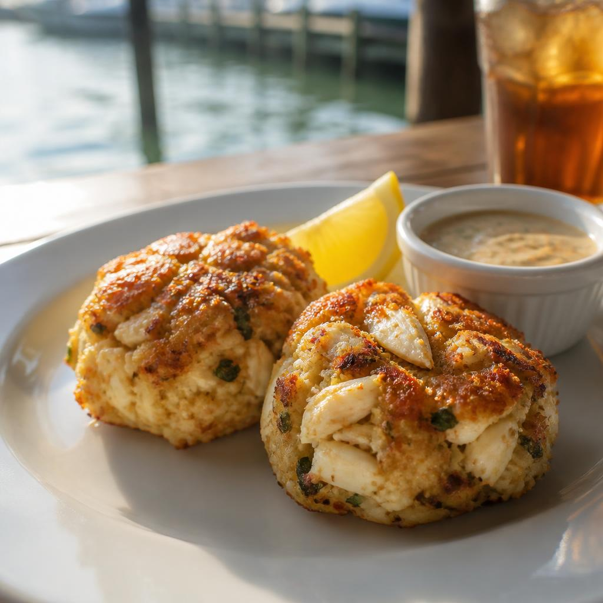
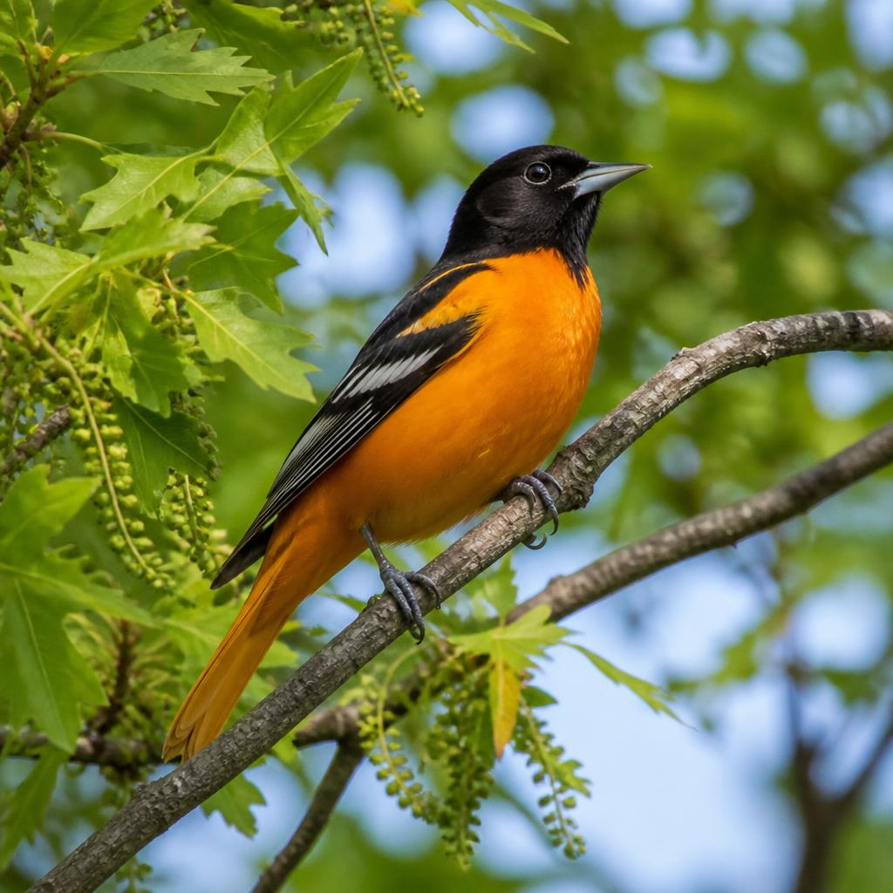

Potomac River · Maryland
Meet me
at the water.
A pocket-sized guide to the bright, breezy corner of Maryland where the river sets the pace.
Start with something good ↓
38° 46′ N / 77° 01′ W
A little room to linger
01 — 04
A PLACE WITH A PULSE
Part waterfront stroll, part dinner plan, part “let’s stay a little longer.”
National Harbor sits on the Maryland side of the Potomac, just south of Washington, D.C. Come for the river views; find your own reason to stay.
01 / A TASTE OF MARYLAND
FOOD.
A classic worth
making time for.

LOCAL
FAVORITE
01 / ON THE TABLE
A CHESAPEAKE CLASSIC
Maryland
crab cakes
Sweet blue crab, just enough seasoning, and a crisp golden edge. Order them with a view of the Potomac and let lunch take its time.
Best enjoyed slowly.
Extra lemon is never a bad idea.
02 / QUICK ORIENTATION
QUICK
FACTS.
The small details that make this place feel like itself.
- ANickname informal“The Harbor”
- BPopulation 2020 Census5,509
- CMaryland became a state1788
MD
LEADER
Wes Moore, Governor of Maryland
03 / A LITTLE STATE PRIDE
Small bird.
Big Maryland
energy.
The Baltimore oriole is Maryland’s state bird: bright, unmistakable, and right at home among the leafy edges of the harbor.
Tap, click, or press Enter
STATE BIRD · MARYLAND

Icterus galbula — Baltimore oriole
04 / YOUR TURNMake it yours
THINGS
I LIKE.
Good trips have their own little list. What caught your eye?
YOUR HARBOR NOTES · JUST FOR YOU
Your list is waiting for its first good thing.
05 / YOUR LOCAL LINE
Ask the
Harbor guide.
A little local perspective on food, the waterfront, and Maryland life. Ask away, neighbor.
NATIONAL HARBOR
MARYLAND · THE POTOMAC
THE HARBOR GUIDE
A local answer, one question at a time.
YOUR LOCAL GUIDE
Hey, neighbor. Looking for a first bite? Maryland crab cakes are a fine place to start. What would you like to know about the Harbor?
Please don’t share personal details. Your chat stays in this page and isn’t saved.